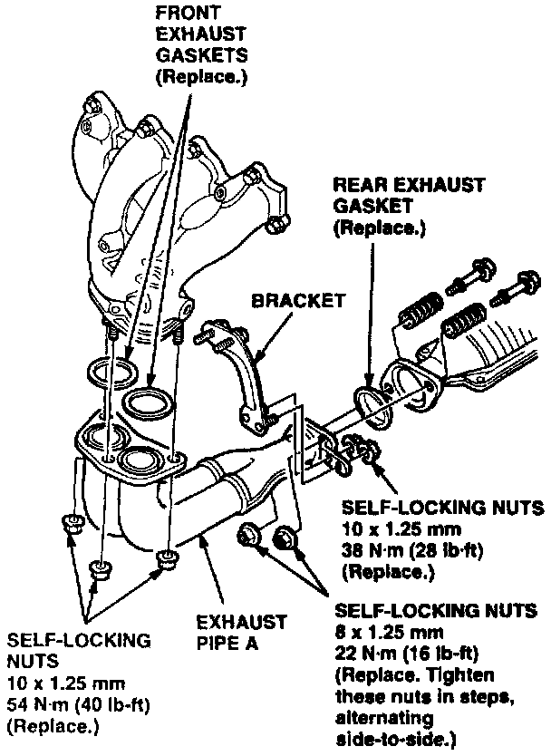

Exhaust - Buzzing Noise From Pipe A
May 13, 1997BULLETIN NO.
97-020
Buzzing Noise From Exhaust Pipe A
SYMPTOM
Exhaust pipe A buzzes between 3,000 and 5,000 rpm.
PROBABLE CAUSE
The inner pipe vibrates against the outer pipe.
VEHICLES AFFECTED
1994-96: ALL
1997: 3-door thru VIN JH4DC2...VS003512
4-door thru VIN JH4DB8...VS000732
CORRECTIVE ACTION
Replace exhaust pipe A and its mounting hardware.
PARTS INFORMATION
Exhaust Pipe A: P/N 18210-ST7-A63
Rear Exhaust Gasket: P/N 18229-SH3-X30
Front Exhaust Gasket (2 required):
P/N 18212-582-961
Self-Locking Nut, 10 x 1.25 mm (5 required):
P/N 90212-SA5-003
Self-Locking Nut, 8 x 1.25 mm (2 required):
P/N 90115-659-003
WARRANTY CLAIM INFORMATION
In warranty:
The normal warranty applies.
Operation number: 311123
Flat rate time: 0.6 hour
Failed P/N: 18210-ST7-A63
Defect code: 042
Contention code: B07
Template ID: 97-020A
Skill level: Repair Technician
Out of warranty:
Any repair performed after warranty expiration may be eligible for goodwill consideration by the District Technical Manager or your Zone Office. You must request consideration, and get a decision, before starting work.
DIAGNOSIS
1. Warm the engine to normal operating temperature.
2. Rev the engine between 3,000 and 5,000 rpm, and listen for a steady buzzing noise from exhaust pipe A; if you hear it, continue to REPAIR PROCEDURE.
REPAIR PROCEDURE
1. Raise the vehicle, and let the exhaust system cool for at least 30 minutes.

2. Remove and discard the seven self-locking nuts from exhaust pipe A.
3. Remove the pipe and the three exhaust gaskets.
4. Install the new pipe in the reverse order of removal. using new exhaust gaskets and self-locking nuts.
5. Start the engine, and confirm that the noise is gone.